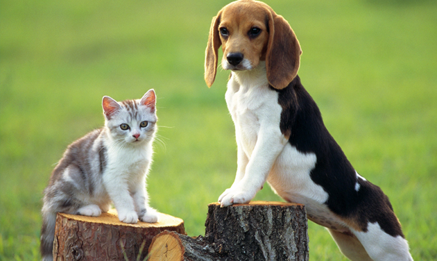
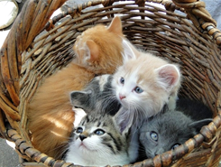
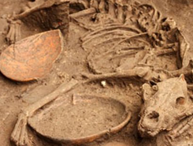
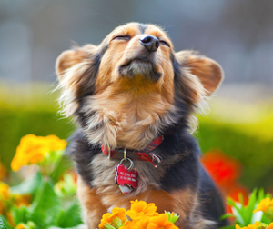

новые питомники
щенков и котят
Самое свежее из блогов

Где лучше покупать животных, на птичьем рынке или в зоомагазине?
24 апреля, 2015
4
7
Практически у каждого, кто задумывается о покупке животного, возникает вопрос, где лучше приобрести себе друга, на птичьем рынке или в зоомагазине?

Как определить настроение собаки по вилянию хвоста ?
19 апреля, 2015
11
15
О том, что довольная собака виляет хвостом, а напуганная его поджимает известно многим, но это далеко не все, что животное может сказать хвостом.

Ученые валеонтологи обнаружили останки доисторических собак
08 апреля, 2015
11
15
Международная группа палеонтологов совершенно случайно наткнулась на останки животного, которое не было ранне известно науке.
